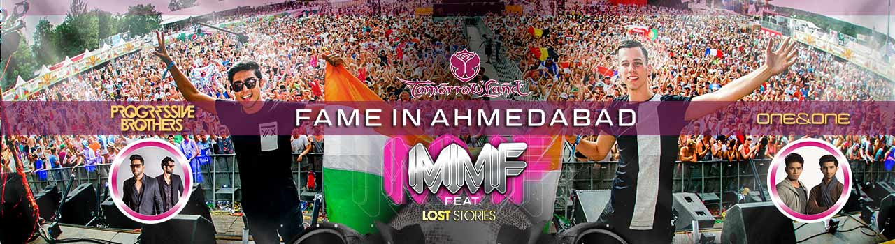

BOOK NOW
MOONLIGHT MUSIC FESTIVAL (EVENT) 80♥
ARTISTS
Lost Stories, Progressive Brothers, One & One
Synopsis
Moonlight Music Festival- Mark your calendars, Ahmedabad. There's a big player in town. Make way for the Moonlight Music Festival. A unique electronic music festival, inclusive of progressive house, electro house and EDM acts featuring some crazy Indian talent with artists like Lost Stories (of Tomorrowland fame), Progressive Brothers and One & One. Join us for an experience like never before as you bust a move against the strobe.
VENUE: Thaltej, S G Highway, Ahmedabad, Gujarat 380054, India